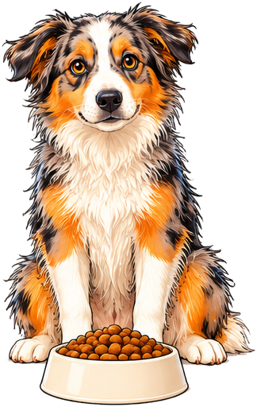

5 Tipps gegen Schlingen.

Tipp 1: Anti-Schling-Napf.

Tipp 2: Schnüffelteppich.

Tipp 3: Muffinblech.

Tipp 4: Kleinere Portionen.

Tipp 5: Ruhe nach dem Fressen.

dein hund schlingt sein futter?
diese 5 tipps helfen
die rillen im napf
bremsen ihn beim fressen
im schnüffelteppich muss er
jedes stück erst suchen
futter ins muffinblech verteilen
der günstige trick von zuhause
lieber 2 bis 3 kleine mahlzeiten
statt einer großen
nach dem fressen kein toben
lieber ausruhen lassen

HundeWissenTv
HundeWissenTv
+ Folgen
Kommentare
Tipp 3 probier ich aus!
AbbrechenKommentieren
WELCHER TIPP? AB IN DIE KOMMENTARE
HundeWissenTv
GESUNDHEIT | VERHALTEN | PFLEGE